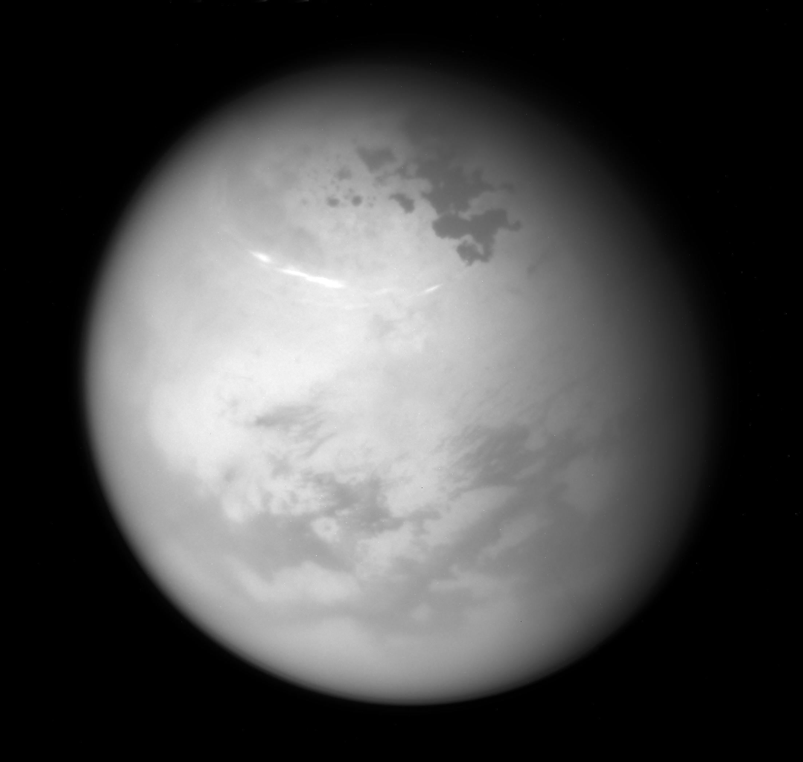

Galactic Wind Tours

Here at Galactic Wind Tours we take our wind sports very seriously and search out the entire Galaxy, that’s 150K light years, to find you the best and most unusual kiting and windsurfing spots!
We are developing specialized equipment and technologies so you can take advantage of wind conditions across a wide range of planets and moons. From high wind “ice giants” like Neptune, shown above, to dusty rocky planets like Mars, to cryogenic methane lakes of Saturn’s moon Triton, shown below, we have you covered!
